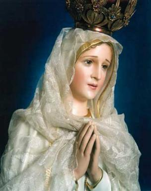

"MILAGRE EUCARÍSTICO DE SIENA (ITÁLIA)"



"OS EXAMES MAIS MODERNOS ATESTARAM A PUREZA DAS HÓSTIAS CONSAGRADAS! ELAS SÃO O CORPO, O SANGUE, A ALMA E DIVINDADE DE DEUS. BENDITO SEJA DEUS; BENDITO SEJA O SEU SANTO NOME; BENDITO SEJA JESUS CRISTO VERDADEIRO DEUS E VERDADEIRO HOMEM"
=ÍNDICE=
 -
- -
- -
- -
-